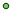
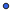

<!doctype html>
<html lang="en">
    <head>
        <meta charset="utf-8">
        <meta http-equiv="X-UA-Compatible" content="IE=edge">
        <meta name="viewport" content="initial-scale=1,user-scalable=no,maximum-scale=1,width=device-width">
        <meta name="mobile-web-app-capable" content="yes">
        <meta name="apple-mobile-web-app-capable" content="yes">
        <link rel="stylesheet" href="css/leaflet.css"><link rel="stylesheet" href="css/L.Control.Locate.min.css">
        <link rel="stylesheet" href="css/qgis2web.css"><link rel="stylesheet" href="css/fontawesome-all.min.css">
        <link rel="stylesheet" href="css/leaflet-control-geocoder.Geocoder.css">
        <link rel="stylesheet" href="css/leaflet-measure.css">
        <style>
        html, body, #map {
            width: 100%;
            height: 100%;
            padding: 0;
            margin: 0;
        }
        </style>
        <title></title>
    </head>
    <body>
        <div id="map">
        </div>
        <script src="js/qgis2web_expressions.js"></script>
        <script src="js/leaflet.js"></script><script src="js/L.Control.Locate.min.js"></script>
        <script src="js/leaflet.rotatedMarker.js"></script>
        <script src="js/leaflet.pattern.js"></script>
        <script src="js/leaflet-hash.js"></script>
        <script src="js/Autolinker.min.js"></script>
        <script src="js/rbush.min.js"></script>
        <script src="js/labelgun.min.js"></script>
        <script src="js/labels.js"></script>
        <script src="js/leaflet-control-geocoder.Geocoder.js"></script>
        <script src="js/leaflet-measure.js"></script>
        <script src="data/Data_GIS_Mentawai_Join_3.js"></script>
        <script>
        var highlightLayer;
        function highlightFeature(e) {
            highlightLayer = e.target;

            if (e.target.feature.geometry.type === 'LineString') {
              highlightLayer.setStyle({
                color: '#ffff00',
              });
            } else {
              highlightLayer.setStyle({
                fillColor: '#ffff00',
                fillOpacity: 1
              });
            }
            highlightLayer.openPopup();
        }
        var map = L.map('map', {
            zoomControl:true, maxZoom:20, minZoom:5
        }).fitBounds([[-4.282246187272275,98.51969049940257],[-1.0832468052116169,101.91751781197976]]);
        var hash = new L.Hash(map);
        map.attributionControl.setPrefix('<a href="https://github.com/tomchadwin/qgis2web" target="_blank">qgis2web</a> &middot; <a href="https://leafletjs.com" title="A JS library for interactive maps">Leaflet</a> &middot; <a href="https://qgis.org">QGIS</a>');
        var autolinker = new Autolinker({truncate: {length: 30, location: 'smart'}});
        L.control.locate({locateOptions: {maxZoom: 19}}).addTo(map);
        var measureControl = new L.Control.Measure({
            position: 'topleft',
            primaryLengthUnit: 'meters',
            secondaryLengthUnit: 'kilometers',
            primaryAreaUnit: 'sqmeters',
            secondaryAreaUnit: 'hectares'
        });
        measureControl.addTo(map);
        document.getElementsByClassName('leaflet-control-measure-toggle')[0]
        .innerHTML = '';
        document.getElementsByClassName('leaflet-control-measure-toggle')[0]
        .className += ' fas fa-ruler';
        var bounds_group = new L.featureGroup([]);
        function setBounds() {
        }
        map.createPane('pane_ESRIGraydark_0');
        map.getPane('pane_ESRIGraydark_0').style.zIndex = 400;
        var layer_ESRIGraydark_0 = L.tileLayer('http://services.arcgisonline.com/ArcGIS/rest/services/Canvas/World_Dark_Gray_Base/MapServer/tile/{z}/{y}/{x}', {
            pane: 'pane_ESRIGraydark_0',
            opacity: 1.0,
            attribution: '',
            minZoom: 5,
            maxZoom: 20,
            minNativeZoom: 0,
            maxNativeZoom: 20
        });
        layer_ESRIGraydark_0;
        map.addLayer(layer_ESRIGraydark_0);
        map.createPane('pane_GoogleSatellite_1');
        map.getPane('pane_GoogleSatellite_1').style.zIndex = 401;
        var layer_GoogleSatellite_1 = L.tileLayer('https://mt1.google.com/vt/lyrs=s&x={x}&y={y}&z={z}', {
            pane: 'pane_GoogleSatellite_1',
            opacity: 1.0,
            attribution: '',
            minZoom: 5,
            maxZoom: 20,
            minNativeZoom: 0,
            maxNativeZoom: 18
        });
        layer_GoogleSatellite_1;
        map.addLayer(layer_GoogleSatellite_1);
        map.createPane('pane_OSMStandard_2');
        map.getPane('pane_OSMStandard_2').style.zIndex = 402;
        var layer_OSMStandard_2 = L.tileLayer('http://tile.openstreetmap.org/{z}/{x}/{y}.png', {
            pane: 'pane_OSMStandard_2',
            opacity: 1.0,
            attribution: '<a href="https://www.openstreetmap.org/copyright">© OpenStreetMap contributors, CC-BY-SA</a>',
            minZoom: 5,
            maxZoom: 20,
            minNativeZoom: 0,
            maxNativeZoom: 19
        });
        layer_OSMStandard_2;
        map.addLayer(layer_OSMStandard_2);
        function pop_Data_GIS_Mentawai_Join_3(feature, layer) {
            layer.on({
                mouseout: function(e) {
                    for (i in e.target._eventParents) {
                        e.target._eventParents[i].resetStyle(e.target);
                    }
                    if (typeof layer.closePopup == 'function') {
                        layer.closePopup();
                    } else {
                        layer.eachLayer(function(feature){
                            feature.closePopup()
                        });
                    }
                },
                mouseover: highlightFeature,
            });
            var popupContent = '<table>\
                    <tr>\
                        <th scope="row">Name</th>\
                        <td>' + (feature.properties['Name'] !== null ? autolinker.link(feature.properties['Name'].toLocaleString()) : '') + '</td>\
                    </tr>\
                    <tr>\
                        <th scope="row">ID</th>\
                        <td>' + (feature.properties['ID'] !== null ? autolinker.link(feature.properties['ID'].toLocaleString()) : '') + '</td>\
                    </tr>\
                    <tr>\
                        <th scope="row">Jenis</th>\
                        <td>' + (feature.properties['Jenis'] !== null ? autolinker.link(feature.properties['Jenis'].toLocaleString()) : '') + '</td>\
                    </tr>\
                    <tr>\
                        <th scope="row">Fasiitas</th>\
                        <td>' + (feature.properties['Fasiitas'] !== null ? autolinker.link(feature.properties['Fasiitas'].toLocaleString()) : '') + '</td>\
                    </tr>\
                    <tr>\
                        <th scope="row">Project</th>\
                        <td>' + (feature.properties['Project'] !== null ? autolinker.link(feature.properties['Project'].toLocaleString()) : '') + '</td>\
                    </tr>\
                    <tr>\
                        <th scope="row">Tahun</th>\
                        <td>' + (feature.properties['Tahun'] !== null ? autolinker.link(feature.properties['Tahun'].toLocaleString()) : '') + '</td>\
                    </tr>\
                    <tr>\
                        <th scope="row">Coordinate</th>\
                        <td>' + (feature.properties['Coordinate'] !== null ? autolinker.link(feature.properties['Coordinate'].toLocaleString()) : '') + '</td>\
                    </tr>\
                    <tr>\
                        <th scope="row">Photo</th>\
                        <td>' + (feature.properties['Photo'] !== null ? autolinker.link(feature.properties['Photo'].toLocaleString()) : '') + '</td>\
                    </tr>\
                    <tr>\
                        <th scope="row">Coord_X</th>\
                        <td>' + (feature.properties['Coord_X'] !== null ? autolinker.link(feature.properties['Coord_X'].toLocaleString()) : '') + '</td>\
                    </tr>\
                    <tr>\
                        <th scope="row">Coord_Y</th>\
                        <td>' + (feature.properties['Coord_Y'] !== null ? autolinker.link(feature.properties['Coord_Y'].toLocaleString()) : '') + '</td>\
                    </tr>\
                    <tr>\
                        <th scope="row">Photo_Link</th>\
                        <td>' + (feature.properties['Photo_Link'] !== null ? '' : '') + '</td>\
                    </tr>\
                </table>';
            layer.bindPopup(popupContent, {maxHeight: 400});
        }

        function style_Data_GIS_Mentawai_Join_3_0(feature) {
            switch(String(feature.properties['Fasiitas'])) {
                case 'OFFICE':
                    return {
                pane: 'pane_Data_GIS_Mentawai_Join_3',
                radius: 8.0,
                opacity: 1,
                color: 'rgba(128,17,25,1.0)',
                dashArray: '',
                lineCap: 'butt',
                lineJoin: 'miter',
                weight: 2.0,
                fill: true,
                fillOpacity: 1,
                fillColor: 'rgba(219,30,42,1.0)',
                interactive: true,
            }
                    break;
                case 'Posyandu':
                    return {
                pane: 'pane_Data_GIS_Mentawai_Join_3',
                shape: 'diamond',
                radius: 8.0,
                opacity: 1,
                color: 'rgba(61,128,53,1.0)',
                dashArray: '',
                lineCap: 'butt',
                lineJoin: 'miter',
                weight: 2.0,
                fill: true,
                fillOpacity: 1,
                fillColor: 'rgba(255,1,84,1.0)',
                interactive: true,
            }
                    break;
                case 'Reservoir':
                    return {
                pane: 'pane_Data_GIS_Mentawai_Join_3',
                radius: 4.0,
                opacity: 1,
                color: 'rgba(35,35,35,1.0)',
                dashArray: '',
                lineCap: 'butt',
                lineJoin: 'miter',
                weight: 1,
                fill: true,
                fillOpacity: 1,
                fillColor: 'rgba(212,161,30,1.0)',
                interactive: true,
            }
                    break;
                case 'Solarpanel':
                    return {
                pane: 'pane_Data_GIS_Mentawai_Join_3',
                radius: 4.0,
                opacity: 1,
                color: 'rgba(35,35,35,1.0)',
                dashArray: '',
                lineCap: 'butt',
                lineJoin: 'miter',
                weight: 1,
                fill: true,
                fillOpacity: 1,
                fillColor: 'rgba(108,217,65,1.0)',
                interactive: true,
            }
                    break;
                case 'Source':
                    return {
                pane: 'pane_Data_GIS_Mentawai_Join_3',
                radius: 4.0,
                opacity: 1,
                color: 'rgba(35,35,35,1.0)',
                dashArray: '',
                lineCap: 'butt',
                lineJoin: 'miter',
                weight: 1,
                fill: true,
                fillOpacity: 1,
                fillColor: 'rgba(51,98,229,1.0)',
                interactive: true,
            }
                    break;
            }
        }
        map.createPane('pane_Data_GIS_Mentawai_Join_3');
        map.getPane('pane_Data_GIS_Mentawai_Join_3').style.zIndex = 403;
        map.getPane('pane_Data_GIS_Mentawai_Join_3').style['mix-blend-mode'] = 'normal';
        var layer_Data_GIS_Mentawai_Join_3 = new L.geoJson(json_Data_GIS_Mentawai_Join_3, {
            attribution: '',
            interactive: true,
            dataVar: 'json_Data_GIS_Mentawai_Join_3',
            layerName: 'layer_Data_GIS_Mentawai_Join_3',
            pane: 'pane_Data_GIS_Mentawai_Join_3',
            onEachFeature: pop_Data_GIS_Mentawai_Join_3,
            pointToLayer: function (feature, latlng) {
                var context = {
                    feature: feature,
                    variables: {}
                };
                return L.circleMarker(latlng, style_Data_GIS_Mentawai_Join_3_0(feature));
            },
        });
        bounds_group.addLayer(layer_Data_GIS_Mentawai_Join_3);
        map.addLayer(layer_Data_GIS_Mentawai_Join_3);
        var osmGeocoder = new L.Control.Geocoder({
            collapsed: true,
            position: 'topleft',
            text: 'Search',
            title: 'Testing'
        }).addTo(map);
        document.getElementsByClassName('leaflet-control-geocoder-icon')[0]
        .className += ' fa fa-search';
        document.getElementsByClassName('leaflet-control-geocoder-icon')[0]
        .title += 'Search for a place';
        var baseMaps = {};
        L.control.layers(baseMaps,{'Data_GIS_Mentawai_Join<br /><table><tr><td style="text-align: center;"></td><td>OFFICE</td></tr><tr><td style="text-align: center;"></td><td>Posyandu</td></tr><tr><td style="text-align: center;"></td><td>Reservoir</td></tr><tr><td style="text-align: center;"></td><td>Solarpanel</td></tr><tr><td style="text-align: center;"></td><td>Source</td></tr></table>': layer_Data_GIS_Mentawai_Join_3,"OSM Standard": layer_OSMStandard_2,"Google Satellite": layer_GoogleSatellite_1,"ESRI Gray (dark)": layer_ESRIGraydark_0,}).addTo(map);
        setBounds();
        var i = 0;
        layer_Data_GIS_Mentawai_Join_3.eachLayer(function(layer) {
            var context = {
                feature: layer.feature,
                variables: {}
            };
            layer.bindTooltip((layer.feature.properties['Name'] !== null?String('<div style="color: #fdf243; font-size: 8pt; font-weight: bold; font-family: \'.AppleSystemUIFont\', sans-serif;">' + layer.feature.properties['Name']) + '</div>':''), {permanent: true, offset: [-0, -16], className: 'css_Data_GIS_Mentawai_Join_3'});
            labels.push(layer);
            totalMarkers += 1;
              layer.added = true;
              addLabel(layer, i);
              i++;
        });
        resetLabels([layer_Data_GIS_Mentawai_Join_3]);
        map.on("zoomend", function(){
            resetLabels([layer_Data_GIS_Mentawai_Join_3]);
        });
        map.on("layeradd", function(){
            resetLabels([layer_Data_GIS_Mentawai_Join_3]);
        });
        map.on("layerremove", function(){
            resetLabels([layer_Data_GIS_Mentawai_Join_3]);
        });
        </script>
    </body>
</html>
